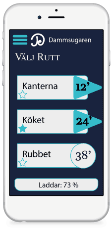

Video
Oväntat besök? Städa enkelt med nya JET!
Appen
Välj rutt
JET robotdammsugare låter dig välja rutt och därmed är det du som bestämmer vilka områden du vill prioritera för städning, precis som om du hade städat själv.
Schemalägg
Schemaläggning gör det möjligt för dig att få nystädat inför en specifik aktivitet till exempel en middagsbjudning eller få städat medan du är på jobbet och kom hem till ett nystädat hem varje dag.
Galleri
Beskrivning
Med 3D-vision navigerar JET robotdammsugare enkelt i ditt hem och städar enkelt runt möbler och andra hinder.
Sensorsystemet läser av rummets olika nivåer och kan på så sätt upptäcka trappor och avsatser.
Smart laddning innebär att robotdammsugaren själv känner av när laddning behövs och åker då till laddstationen.
Specifikationer
- Egenskaper
- Perfekt rengöring
- Stor dammbehållare
- Hörnrengöring
- Säkerhetssystem
- Främre borste
- Tvättbart filter
- Filterindikator
- Programerbar timer
- Lättviktskonstruktion
- Påslös
- Mjukvara
- Enkla menyer
- Senaste tekniken
- Uppdaterbar - Ja
- Virtuell barriär - Nej
- Språkval - Ja
- Ljus - av/på
- Ljud - av/på
- Mått
- Höjd, mm 58
- Diameter, mm 235
- Nettovikt, kg 2.32
- Tillbehör
- Fjärrkontroll - Ja
- App - Ja
- Extra filter - 2